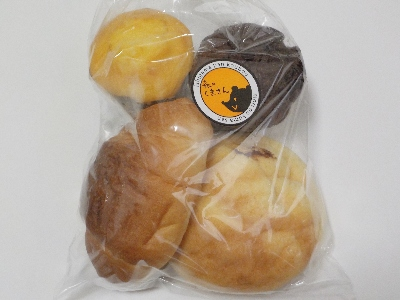
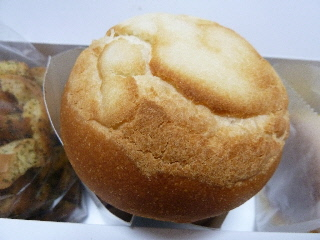
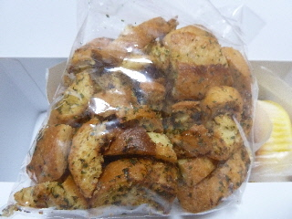
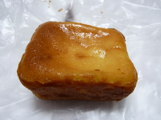
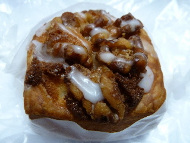
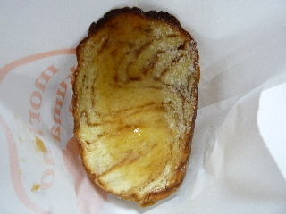
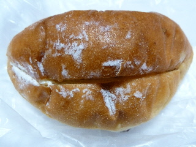
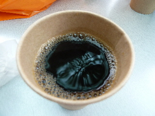

one story home様より森のくまさんのパンをもらいました。
2024/03/23

BSSまつりで「全国ネットワーク インデュアホーム加盟店 インデュアホーム松江 OneStoryHome株式会社」様のインスタをフォローしたら、森のくまさんのパンがもらえました。
美味しいパンをありがとうございます。
島根県松江市乃白町159-1
2024/03/23

BSSまつりで「全国ネットワーク インデュアホーム加盟店 インデュアホーム松江 OneStoryHome株式会社」様のインスタをフォローしたら、森のくまさんのパンがもらえました。
美味しいパンをありがとうございます。
2019/09/16
旅先で森のくまさんと似た店舗があるなーって思っていいたんですがプロディース会社が同じなんですね。
株式会社ダイユーさんてところがパン屋の開業・開店プロデュースをしているそうです。【https://www.daiyu.net/】
中国地方だと、
島根は森のくまさん松江店、出雲店。
鳥取は森のくまさん米子店、スペイン石窯パンの家ボノス
広島は石窯パン工房こばぱん可部店
岡山は石窯パン工房麦のひげ津高店、石窯パン工房麦のひげ
山口はハンナブレッド、石窯パン工房 須恵の郷 小野田店、石窯パン工房 須恵の郷 新山口店、石窯パン工房ドロシー 新下関店
これからもっと店舗が増えるんだろうな。
出かけた際には他のお店にも行ってみたいと思いました。
それぞれ特色が違うんでしょうね。
2014/06/15
森のくまさんで、ドーナッツのボックスセットみたいなパンセットがありました。
5種類入って880円なので、たぶんお得です。

中で良かったのはこれ、博多明太子チーズフォンデュです。
チーズがたっぷり入っていました。明太子も多く、惣菜味たっぷりです。
味が濃い分パンの味は分かりませんでしたが、具沢山なのはいいですよね。

おもしろかったのはこれ！おつまみラスクです。
小さく刻んであるので食べやすいですね。まさにおつまみな感じです。
ガーリックとコンソメ味が効いてるラスクなんですが、一個一個味が違いました。
均等に味が付いてないので、これ苦い！、辛い、あっさり、コンソメ味、ガーッリック味、マーガリン味って一袋で色々な味がしました。
おみくじみたいです。次はどんな味かなーって楽しみながら食べました。
2013/05/19
今日はパンを沢山買いました。

窯出しチーズケーキです。（90円）
見た目濃厚な感じしますね。
上がチーズで、下が甘いスポンジになっていました。ちょっとかわったチーズケーキですね。

クルミとリンゴデニッシュです。（140円）
見た目どうりで、砂糖甘くて美味しかったです。
いいおやつです。
今日は他にも色々パンを買って、1000円以上使いました。
買い過ぎました。
あと、「石窯パン工房 森のくまさん」って名前なので、ピザを買えばよかったです。
今度行く機会があったらピザを探そう。
2013/05/19
森のくまさんに初めて行きました。
パンの系統が色々あって、何を選ぼうか迷いました。

森の切り株って名前のパンです。（180円）
お店の名前が少しはいっているので、看板商品？
シロップがかかったところは甘くて美味しかったです。

これはラムレーズンです。（160円）
レーズンが少な目ですね。このパンはたまたま表面にレーズンがなかったです。
パンの中にクリームが多く入っているので、クリーム味の方が印象に残りました。
2013/05/19
松江市のパン屋さん「石窯パン工房 森のくまさん」に行きました。

大きい店舗のパン屋さんなんですが、お客さんが多いので店内が窮屈でした。
ちょっと疲れたので、セルフのコーヒーをいただきました。
テーブルと椅子が店外のテラスにあるので、のんびりコーヒーが飲めてよかったです。
気候のいい時期にはいいサービスですね。